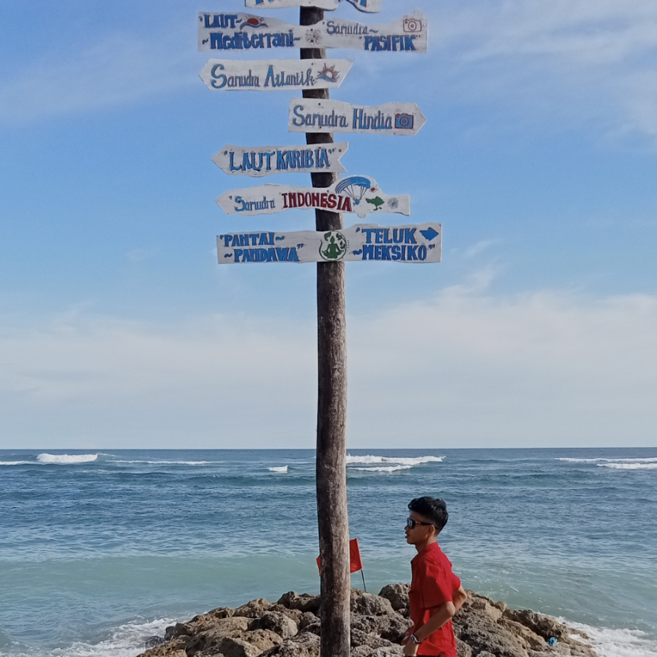

Temukan Pesona Pantai Pandawa: Hal-Hal Utama yang Harus Anda Ketahui
Pantai Pandawa, destinasi yang menawan di Bali, menawarkan keindahan alam yang tiada tara. Pasir putih yang lembut dan ombak yang tenang menciptakan suasana damai dan menenangkan. Di sekitar pantai, tebing-tebing curam menjulang tinggi, menghiasi panorama dengan pesona alami. Saat senja tiba, langit berwarna jingga keemasan memberikan pemandangan yang memukau, menjadikannya tempat yang sempurna untuk bersantai dan menikmati keindahan alam. Pantai Pandawa adalah surga bagi para pencari ketenangan dan keindahan yang abadi.
Pantai Pandawa, surga tersembunyi di Bali, menyuguhkan keindahan yang luar biasa. Ombak lembut berlari di atas pasir putih yang bersih, menciptakan harmoni yang menenangkan. Di balik tebing-tebing yang megah, angin berbisik membawa aroma laut yang segar. Tempat ini bukan hanya sekadar pantai, tetapi juga sebuah pengalaman yang mengajak kita untuk meresapi kedamaian dan keindahan alam. Setiap sudutnya menawarkan keajaiban yang siap memikat hati para pengunjung.
Pantai Pandawa, sebuah permata tersembunyi di Bali, menghadirkan pesona yang tiada duanya. Pasir yang halus berpadu dengan air laut yang jernih, menciptakan suasana yang ideal untuk bersantai. Di balik tebing yang menjulang, panorama menakjubkan menyuguhkan keindahan alam yang menawan. Suara deburan ombak dan angin sepoi-sepoi menyatu, menawarkan ketenangan bagi siapa pun yang berkunjung. Di sini, setiap momen terasa berharga, menjadikan Pantai Pandawa sebagai tempat pelarian yang sempurna.
Pantai Pandawa, tempat di mana keindahan alam berpadu dengan ketenangan, menawarkan pengalaman yang tak terlupakan. Pasir putih yang lembut dan air laut yang berwarna turquoise menciptakan suasana yang memesona. Dikelilingi oleh tebing-tebing tinggi, pantai ini menyimpan keajaiban yang siap dieksplorasi. Setiap sudutnya mengundang pengunjung untuk bersantai dan menikmati momen-momen berharga di tengah alam yang menakjubkan. Di Pantai Pandawa, keindahan dan kedamaian bertemu dalam harmoni sempurna.
Make better business
Pantai Pandawa, sebuah oasis di Bali, menyuguhkan keindahan yang memikat hati. Dengan pasir putih yang lembut dan ombak yang tenang, tempat ini menjadi surga bagi para pencari ketenangan. Tebing-tebing yang menjulang tinggi mengelilingi pantai, menciptakan panorama yang spektakuler. Setiap detik di sini mengajak kita untuk menikmati keindahan alam dan momen berharga. Pantai Pandawa adalah lambang kedamaian dan keindahan yang abadi, menawarkan pengalaman yang tak terlupakan bagi setiap pengunjung.
Pantai Pandawa, tempat di mana keindahan alam bersatu, menawarkan suasana yang menenangkan. Dengan pasir putih yang bersih dan air laut yang jernih, setiap langkah terasa menyegarkan. Dikelilingi oleh tebing yang megah, panorama di sini menciptakan latar belakang yang sempurna untuk bersantai. Suara deburan ombak dan angin sepoi-sepoi menciptakan harmoni, menjadikan pantai ini sebagai tempat pelarian ideal dari hiruk-pikuk kehidupan sehari-hari. Pantai Pandawa adalah destinasi yang memikat, siap menyuguhkan pengalaman yang mendalam dan tak terlupakan.
"Untuk bangkit seperti Pandawa, kamu harus menghadapi setiap tantangan dengan keberanian, karena hanya melalui ketekunan, kemenangan sejati bisa diraih."
Pantai Pandawa, sebuah tempat yang memikat hati dengan keindahan alamnya. Pasir putih yang lembut dan air laut yang berkilau menciptakan suasana yang damai. Di balik tebing-tebing yang megah, panorama menakjubkan menyuguhkan momen-momen berharga bagi para pengunjung. Setiap deburan ombak dan hembusan angin sejuk menambah pesona pantai ini. Pantai Pandawa bukan hanya sekadar tujuan wisata, tetapi juga tempat untuk merasakan kedamaian dan keajaiban alam yang abadi.
Pantai Pandawa, tempat yang memikat dengan keindahan luar biasa. Ombak lembut menyapu pasir putih yang bersih, menciptakan suasana tenang dan menenangkan. Dikelilingi oleh tebing-tebing yang menawan, panorama di sini sungguh mempesona. Setiap momen di pantai ini mengajak kita untuk menikmati kedamaian dan keindahan alam. Pantai Pandawa adalah destinasi ideal bagi mereka yang mencari pelarian dari rutinitas, menawarkan pengalaman yang tak terlupakan dalam suasana yang harmonis.
Faktor Terkenalnya Pantai Pandawa
Pantai Pandawa terkenal karena keindahan alamnya yang memukau, dengan pasir putih yang lembut dan air laut berwarna turquoise. Keberadaan tebing-tebing tinggi yang megah menambah daya tarik visual, menciptakan panorama yang menawan. Aktivitas yang beragam, seperti berselancar, berjemur, dan menjelajahi area sekitarnya, menarik banyak pengunjung. Selain itu, suasana yang tenang dan nyaman membuatnya menjadi pilihan ideal untuk relaksasi. Dengan fasilitas yang memadai dan akses yang mudah, Pantai Pandawa menjadi salah satu destinasi utama di Bali yang tidak boleh dilewatkan.
Pantai Pandawa terkenal karena pesonanya yang memikat, menawarkan keindahan alam yang tiada tara dengan pasir putih dan air laut yang jernih. Dikelilingi tebing-tebing curam yang menawan, tempat ini menjadi latar belakang sempurna untuk foto-foto. Selain itu, aktivitas seperti berjemur dan bermain air menjadi daya tarik tersendiri bagi pengunjung. Suasana damai dan fasilitas yang memadai menjadikannya sebagai tempat ideal untuk bersantai. Pantai Pandawa benar-benar merupakan destinasi yang memanjakan mata dan hati, menarik wisatawan dari berbagai penjuru.